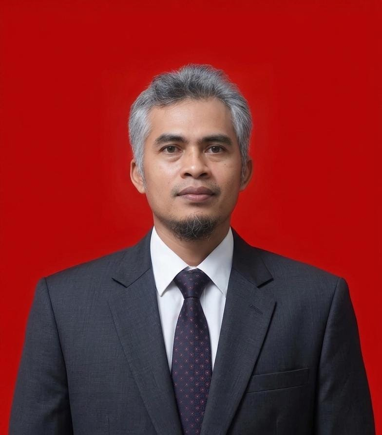

Reliability Engineering
RCM, RCFA, equipment health, condition monitoring, reliability databases and KPI reporting.
15+ years across mining, heavy equipment and fixed-plant operations—combining field engineering, maintenance strategy, reliability data and continuous improvement.

Experienced Mechanical and Reliability Engineer with a background in heavy equipment, fixed plant equipment, mining operations and maintenance planning.
Career progression covers parts analysis, maintenance planning, system engineering, reliability engineering, superintendent leadership and technical support.
RCM, RCFA, equipment health, condition monitoring, reliability databases and KPI reporting.
Shutdown planning, PM programs, forecasting, budgeting, spare-part strategy and work packages.
Rotating and fixed equipment troubleshooting across pumps, mills, kiln, furnace and mining equipment.
SAP PM, Pronto XI, reporting tools, equipment hierarchy and maintenance data quality.
Oil analysis, vibration, temperature, data logger and predictive maintenance reporting.
Team leadership, engineering work packages, troubleshooting coordination and continuous improvement.
Develops and transfers maintenance programs; supports warranty equipment, field troubleshooting and customer discussions on pump technical specifications and selection.
Led mechanical maintenance for a major acid–iron–metal smelter in IMIP; developed maintenance strategies, spare inventory, PM documentation, commissioning records and two-year budgets.
Managed planning and reliability teams with focus on shutdown planning, failure analysis, reliability KPIs, safety investigations and continuous improvement.
Created Life Cycle Cost analysis, improved GET and undercarriage management, built equipment-health data and predictive maintenance dashboards.
Developed SAP PM custom reports and tools supporting multi-site asset management and data accuracy.
Preventive maintenance planning, oil analysis, data reporting and mobilization for new mining projects.
Inventory analysis and spare-parts optimization.
Three selected improvement programs from Petrosea, BSI and MTI. The wording below preserves the project facts you supplied; measurable savings, dates and technical details can be added when available.
An innovation program focused on improving fuel efficiency for Caterpillar Dozer D8R equipment.
Add the exact improvement method, baseline fuel consumption, achieved reduction and annual saving to turn this into a quantified case study.
Reduced GET cost for Grader 16M by moving from Genuine parts to a qualified local brand solution.
Add the old vs new price, service life comparison, cost saving percentage and validation method for a stronger commercial/engineering story.
An innovation initiative involving a rooftop concept/application for Ball Mill equipment at PT Merdeka Tsingshan Indonesia.
Add the original problem, rooftop design/function, implementation scope, safety considerations and resulting benefit.
Maintenance strategy, PM documentation, spare inventory and reliability data for heavy industrial equipment.
RCM · RCFA · KPIVibration, temperature, oil-analysis and equipment data structured for predictive maintenance reporting.
Vibration · Oil · DashboardsCustom SAP PM reports and tools supporting asset management and data accuracy.
SAP PM · Data QualityContinuous improvement across mobile equipment, drill machines, pumps and processing equipment.
Fleet · Pumps · ProcessLife-cycle cost analysis and maintenance-cost improvement including GET and undercarriage management.
LCC · OptimizationShutdown activities, forecasts, budgets and engineering work packages against maintenance targets.
Shutdown · Budget · KPIVibration, temperature, oil-analysis and equipment data structured for predictive maintenance reporting.
Vibration · Oil · DashboardsCustom SAP PM reports and tools supporting asset management and data accuracy.
SAP PM · Data QualityShutdown activities, forecasts, budgets and engineering work packages against maintenance targets.
Shutdown · Budget · KPIYogyakarta State University
GPA 3.17Automotive Engineering — SMK Pangudi Luhur Muntilan
2024 RCM — Reliability Centered Maintenance, Relogica
2022 Internal Audit (ICAM)
2019 Machinery Failure Analysis / RCFA, IK Academy Malaysia
2014 SAP End User Program, Petrosea & Accenture
2013 POP — Pengawas Operasional Pertama
2021 TOEFL ITP — 550


For professional opportunities, technical discussions or collaboration, feel free to reach out.